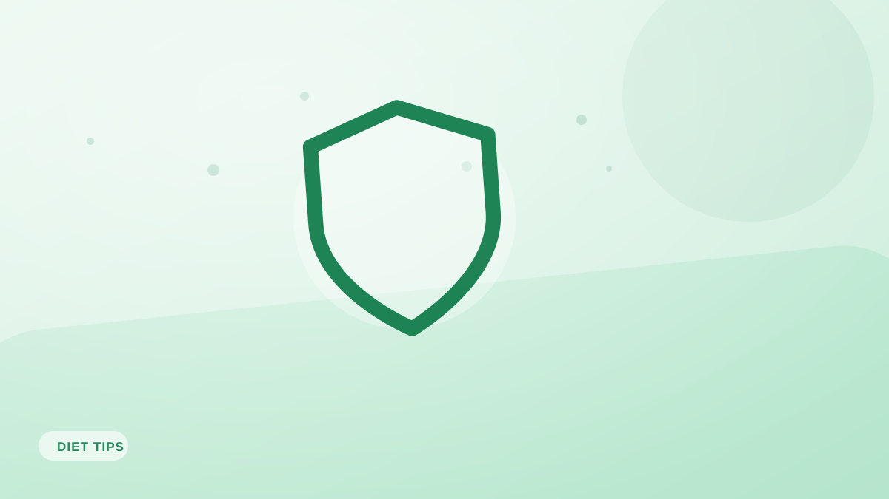

Lo último
>
Cómo contar calorías con precisión: guía para principiantes
>Aprende a contar calorías con precisión sin quemarte. Una guía práctica y sin rodeos sobre raciones, etiquetas y cómo crear un hábito que dure.
Textos prácticos y sin glamur sobre nutrición, peso y los hábitos que lo sostienen todo — justo la parte que casi todo internet se salta camino de venderte algo.
Aprende a contar calorías con precisión sin quemarte. Una guía práctica y sin rodeos sobre raciones, etiquetas y cómo crear un hábito que dure.
53 artículos

Tu TDEE es el número de calorías que quemas al día. Cómo estimarlo, por qué cambia y cómo usarlo para perder, ganar o mantener peso.

Toda dieta que funciona lo hace porque crea un déficit calórico. Qué es un déficit, cómo de grande debe ser y cómo sostenerlo sin pasarlo mal.

¿Cuentas calorías y no bajas de peso? Estos siete errores explican la mayoría de los progresos estancados, y todos son fáciles de corregir.

«Una caloría es una caloría» frente a «céntrate en comida real»: esta guía zanja el debate y muestra por qué cantidad y calidad importan las dos.

¿Sin báscula de cocina? Aún puedes registrar bien usando porciones de la mano, referencias visuales y el registro por foto. Guía práctica para estimar con criterio.

Raciones, % de valores diarios, azúcares añadidos y marketing tramposo: aprende a leer una etiqueta en segundos y a esquivar las trampas más comunes.

Una guía clara para principiantes sobre los tres macronutrientes: qué hace cada uno, cuántas calorías aportan y cómo equilibrarlos según tus objetivos.

La CDR es un suelo, no un objetivo. Cuánta proteína necesitas de verdad para músculo, pérdida de grasa y saciedad, con formas sencillas de llegar.

Llevamos décadas culpando a los carbohidratos del aumento de peso. Esto es lo que hacen en realidad, cuáles conviene priorizar y por qué no merecen tanto miedo.

La grasa no engorda por defecto: es esencial. Cuánta grasa necesitas, en qué se diferencian los tipos y cómo elegir con criterio.

Un método sencillo y sin rodeos para calcular tus calorías y macros de pérdida de grasa: primero la proteína, luego grasas y carbohidratos, con ejemplo.

La fibra te sacia, estabiliza el azúcar en sangre y cuida tu intestino, y aun así casi nadie llega. Cuánta necesitas y cómo conseguirla.

Puedes cumplir tus objetivos de calorías y macros y aun así comer mal. Por qué importan los micronutrientes y cómo cubrirlos sin obsesionarte.

¿El azúcar de la fruta es tan malo como el de un refresco? Esta es la diferencia real entre azúcares añadidos y naturales, y cuánto azúcar es demasiado.

Las dietas exprés fracasan porque son invivibles. Un enfoque sostenible y basado en la evidencia que sí puedes mantener toda la vida.

El número de la báscula oscila por decenas de razones que no tienen nada que ver con la grasa. Cómo medir tu progreso sin volverte loco.

¿Progreso parado? Los estancamientos son normales y tienen arreglo. Las razones reales por las que se frena la pérdida y formas prácticas de reactivarla.

Más rápido no es mejor. El ritmo ideal de pérdida de peso para proteger el músculo, evitar el efecto rebote y no recuperarlo.

¿Comer muy poco detiene la pérdida de peso? La ciencia real de la adaptación metabólica, los mitos desmontados y qué pasa de verdad cuando comes poco.

Perder peso es solo la mitad de la batalla. Cómo no recuperarlo: los hábitos, la mentalidad y los pequeños sistemas que hacen que el mantenimiento funcione.

Comer para calmar el estrés, el aburrimiento o la tristeza es humano, pero puede desviarte de tus objetivos. Cómo detectarlo y responder con amabilidad.

Dormir mal sabotea la pérdida de peso en silencio: sube el hambre, los antojos y el almacenamiento de grasa. La ciencia y formas sencillas de dormir mejor.

Olvídate de los planes de comida complicados. El método del plato equilibrado es un sistema visual sencillo para montar comidas satisfactorias sin contar nada.

Un desayuno rico en proteína frena los antojos y estabiliza la energía toda la mañana. Ideas sencillas y saciantes, desde opciones de cinco minutos hasta preparadas la víspera.

Picar entre horas no es el enemigo; lo son los snacks equivocados. Ideas saciantes, con proteína y fibra, que quitan el hambre sin arruinarte el día.

Comer bien no tiene por qué salir caro. Estrategias prácticas para cumplir tus objetivos de proteína y nutrición sin reventar la compra.

Los restaurantes no tienen por qué descarrilar tus objetivos. Estrategias sencillas para disfrutar comiendo fuera sin salirte demasiado de tus calorías.

Comer bien empieza en el carro de la compra. Cómo montar una lista que llene tu cocina de aciertos y deje la comida basura fuera de casa.

Preparar comidas ahorra tiempo, dinero y fuerza de voluntad. Un sistema apto para principiantes que no te robará todo el domingo en la cocina.

Las raciones han crecido en silencio. Trucos prácticos para comer la cantidad adecuada, sin pesar nada y sin sentir privación.

El agua importa más de lo que parece para el apetito, la energía y el rendimiento. Cuánta necesitas realmente y cómo apoya tus objetivos de peso.

Planificar el menú no tiene por qué ser complicado. Esta rutina semanal de 30 minutos te quita de encima el estrés diario del «¿qué cenamos?».

Cocinar en tandas convierte una sesión de cocina en una semana de comidas sanas. Cómo hacerlo con eficacia, qué cocinar y cómo conservarlo con seguridad.

Comer con atención plena te hace disfrutar más de la comida y comer de más con menos frecuencia. Qué es, por qué funciona y cómo practicarla en tu próxima comida.

Comer de noche echa a perder muchos días buenos. Por qué ocurre y estrategias prácticas para que tus noches no se descontrolen.

La alimentación intuitiva y el conteo de calorías se presentan como enemigos. En realidad se complementan, y así puedes combinarlos.

Los antojos son normales, no un fallo moral. Por qué aparecen y cómo satisfacerlos de una forma que encaje con tus objetivos, sin culpa.

¿Se puede adelgazar sin gimnasio? La respuesta honesta sobre dieta y ejercicio para perder grasa, y por qué aun así no conviene saltarse el movimiento.

¿Hacer cardio o levantar pesas para perder grasa? Qué aporta cada uno, por qué la respuesta es «los dos» y cómo combinarlos con eficacia.

Las pulseras y las máquinas de cardio exageran muchísimo el gasto. Una mirada realista a las calorías del ejercicio y por qué no conviene «recuperarlas» comiendo.

La recomposición corporal —perder grasa y ganar músculo a la vez— es real, pero tiene matices. Quién puede lograrla, cómo, y qué esperar de forma realista.

El NEAT —las calorías que quemas con el movimiento cotidiano— puede superar de largo a tus entrenamientos. Qué es y cómo usarlo para perder grasa más fácil.

La constancia gana siempre a la intensidad. Estrategias prácticas y respaldadas por la psicología para que los hábitos de comer y moverte se queden.

¿Existe la «ventana anabólica»? Qué dice la ciencia sobre el momento de tomar proteína, el mito de los 30 minutos post-entreno y lo que sí importa.

¿El ayuno intermitente es magia o control de calorías disfrazado? Una mirada basada en la evidencia a sus beneficios reales y a quién le encaja.

El debate entre low-carb y low-fat lleva años encendido. Esto es lo que muestra la investigación y cómo elegir el enfoque que encaja en tu vida.

Los zumos depurativos y los tés détox prometen eliminar toxinas y derretir grasa. Lo que ocurre en realidad, y por qué tu hígado ya lo hace gratis.

Una comida trampa puede aliviar el cansancio de la dieta o desencadenar una espiral. Así distingues una cosa de la otra y usas la flexibilidad sin descarrilar tu progreso.

Las dietas exprés prometen resultados rápidos y entregan efecto rebote. La ciencia de por qué fallan y una alternativa sostenible que sí funciona.

Una dieta más rica en proteína favorece la pérdida de grasa, el músculo y la saciedad. Los beneficios reales, cuánta apuntar y formas fáciles de comer más.

Tu TMB es la energía que tu cuerpo quema solo por mantenerte vivo. Qué la afecta, cómo estimarla y cómo encaja en tus necesidades calóricas.

Ningún alimento es mágico, pero algunos te llenan con muchas menos calorías. Estos son los alimentos saciantes que hacen que un déficit resulte casi fácil.

¿Cenar tarde engorda? ¿Hace falta desayunar? Esto es lo que dice la evidencia sobre horarios y frecuencia de comidas, y lo que de verdad importa.
Aún no hay artículos en esta categoría.
Pon cualquiera de estas ideas en práctica en unos diez segundos por comida: fotografía tu plato y Fotocal se encarga de los números.
DISPONIBLE ENGoogle Play